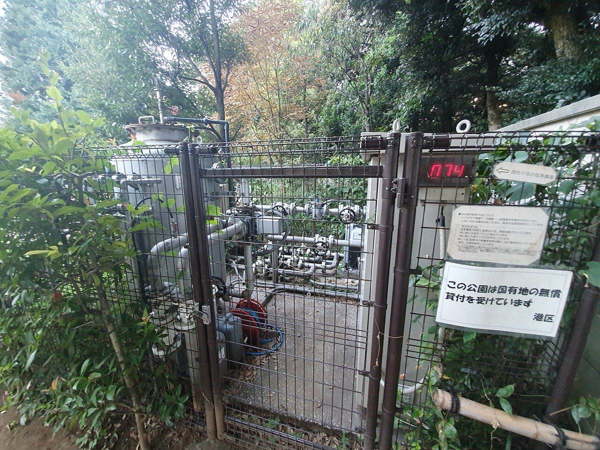
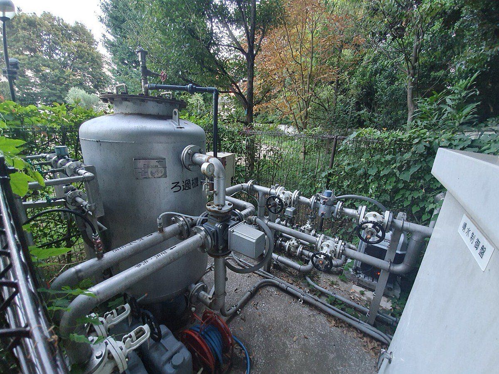
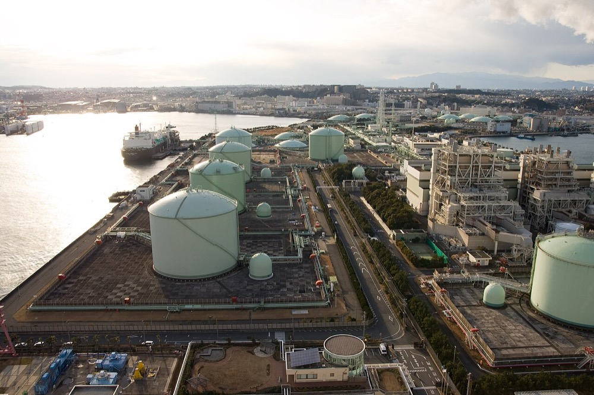
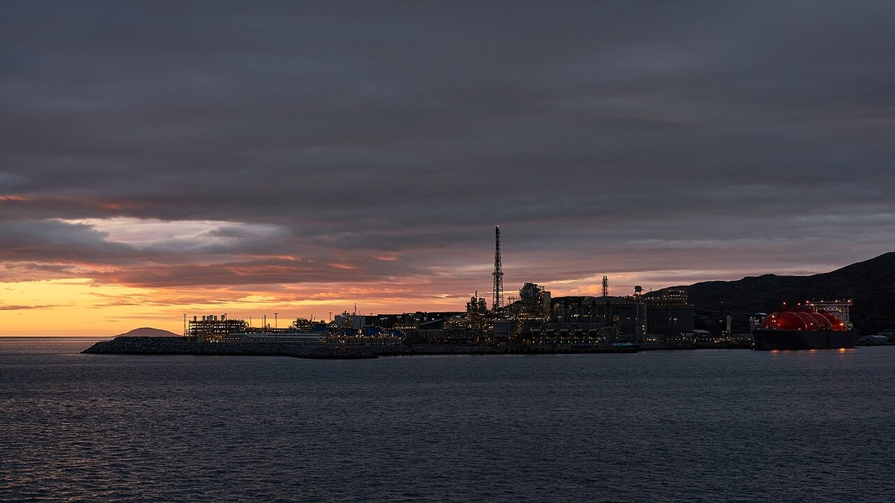
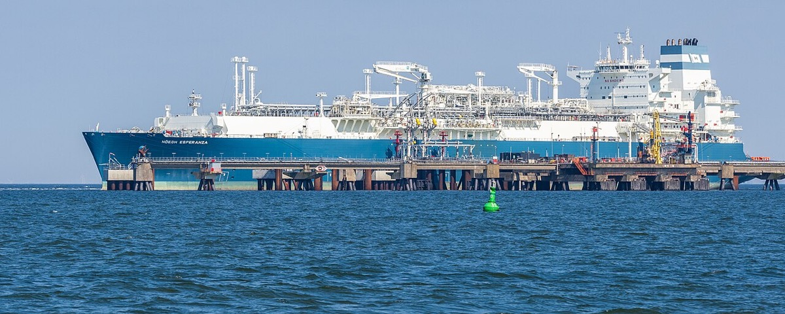
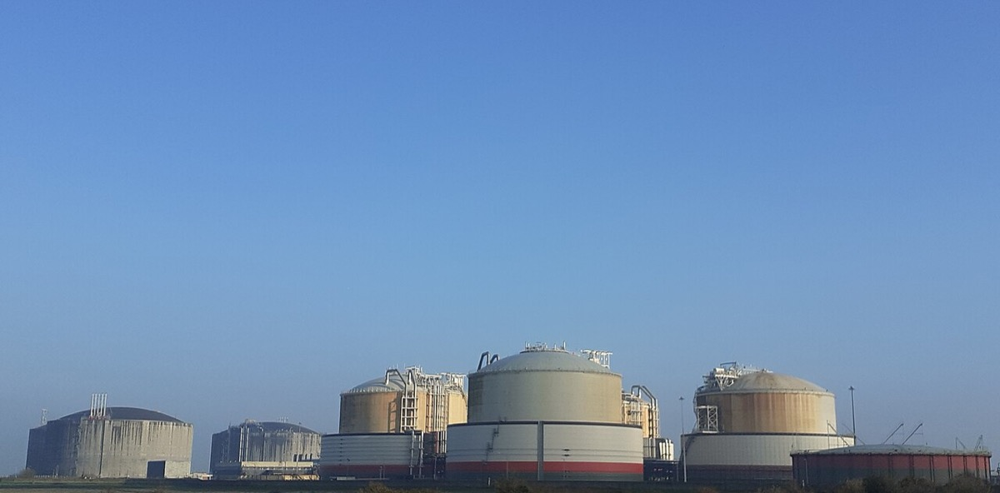
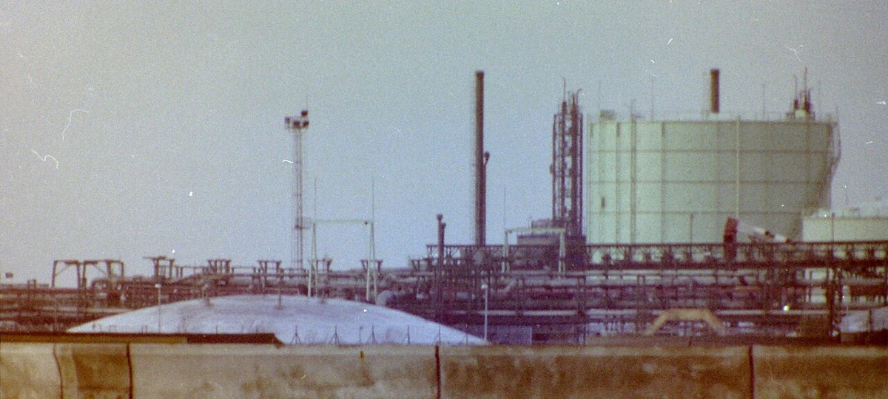
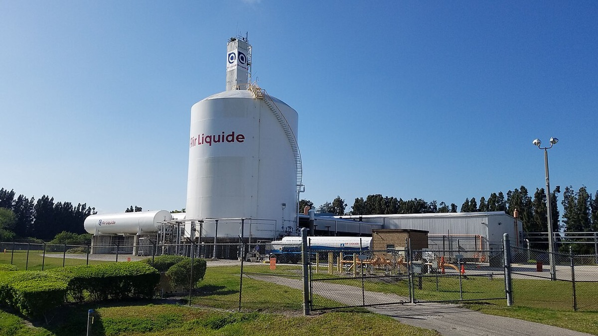
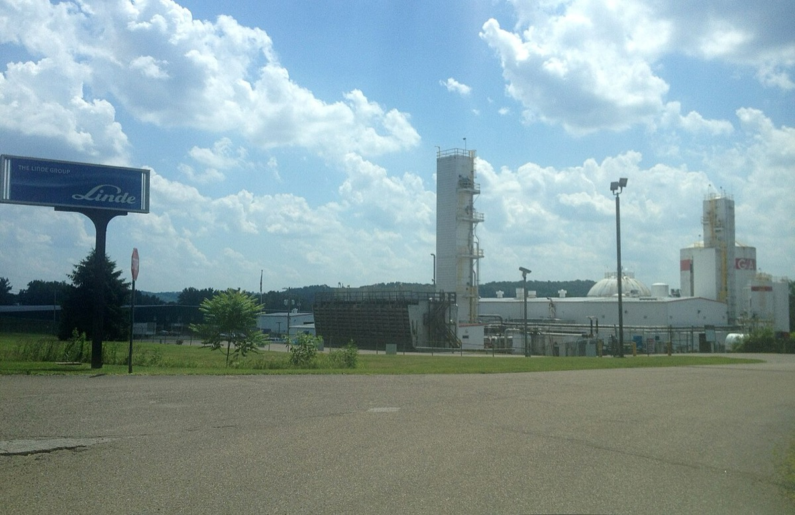

日機装株式会社
2025年12月期の連結売上収益は2,156億円。利益の中心は工業部門であり、事業別開示ではインダストリアル事業の利益が航空宇宙を大きく上回る。会社が掲げるクライオジェニックポンプ世界シェア約50%は、LNG以外の液化ガスを含む自己推計である。FY2025の増益説明はLNG設備投資の受注と整合するが、装置と保守の売上比率が非開示のため、事業価値の主因が保守か装置かは判定できない。
主張
読者と判断：日機装の工業部門を評価するとき、次の2点を決められる。会社KPIのクライオジェニックポンプ約50%をLNG単独のシェアとして使うか否か。利益を「新規装置の受注」と「既設の保守」のどちらで読むか（後者は、公開数値だけでは決めきれない）。
- 主張：会社開示のクライオジェニックポンプ世界シェア約50%は、LNG以外の液化ガスを含む定義の自己推計であり、LNG単独の市場シェアとして使うと過大になる。反証条件：会社がLNG単独で約50%と定義した一次開示、または業界団体のLNG向け出荷台数で日機装が約50%を示すこと。判定：支持（会社記事と統合報告書は用途に酸素・窒素・水素等を含め、LNG限定の第三者推計は22%から26%にとどまる。方法論は非公開の単一二次報道・調査要約でsingle-source）。
- 主張：極低温ポンプ事業の価値を決める主因は既設稼働台数に対応する保守であり、新規LNG基地の最終投資決定件数は事業価値の先行指標として機能しない。反証条件：複数年の装置販売と保守・部品の売上比率が開示され装置側が過半であること。あわせて工業部門の利益変動がLNG最終投資決定件数と正の相関を示すこと。支持側の条件は、保守比率が過半で利益変動が最終投資決定件数と無相関または負の相関を示すこと。判定：判定不能（FY2025の会社説明はLNG設備投資需要と受注残1,156億円に整合するが、保守と装置の売上内訳は非開示であり、主因の帰属を棄却も支持もできない。判定に必要なデータは装置／保守の多期売上内訳とLNG最終投資決定件数との時系列相関である）。
分解：物理的制約は摂氏マイナス162度での金属収縮差と、常温検査では性能を確定できない試験設備の必要性である。お金の流れは基地建設時の装置売上と、20年から40年の稼働中の部品交換・保守に分かれる。利得の帰属はLNG基地運営者にあり、停止は燃料供給の停止に直結するため、価格より稼働実績の台数で供給者を選ぶ。法と強制力は船級協会の基本設計承認と各国の圧力容器規格である。時間は稼働実績そのものが参入障壁になり、1基目の実績が無い供給者は受注を取れない。
1結論Verdict
本社は東京都渋谷区恵比寿4丁目20番3号。連結従業員数は2025年12月末で8,120人（臨時雇用353人を別掲）。上場は東証プライム、証券コード6376である。1 親会社所有者帰属当期利益は136億52百万円、親会社所有者帰属持分は1,581億76百万円、ROEは9.16%である。1 基本的1株当たり当期利益は206.22円、1株当たり親会社所有者帰属持分は2,422.33円である。1 配当は2025年12月期が年間40円、次期は年間50円を予定している。1
2利益の所在（工業と医療、インダストリアルと航空宇宙）Where Profit Comes From
報告セグメントは工業部門と医療部門の2つである。工業部門は取扱製品によりインダストリアル事業と航空宇宙事業に区分され、医療部門はメディカル事業のみで構成される。1 有価証券報告書の報告セグメント注記は工業と医療の二分割だが、2025年12月期の決算短信は事業別の売上と利益を分けて開示している。12 以下の金額はいずれも2025年12月期（as_of: 2025-12-31）である。報告セグメントと事業別は集計範囲が異なるため、同一表の「うち」としては並べない。
| 報告セグメント | 外部売上（百万円） | 構成比 | セグメント利益（百万円） | 利益率 | 売上YoY |
|---|---|---|---|---|---|
| 工業部門 | 136,750 | 63.5% | 13,504 | 9.9% | +5.1% |
| 医療部門 | 78,891 | 36.5% | 6,055 | 7.7% | -5.3% |
| 調整額・全社費用等 | — | — | -4,228 | — | — |
| 連結合計 | 215,642 | 100% | 15,331 | 7.1% | +1.1% |
有報のセグメント注記。1 構成比は外部売上合計に対する比率。利益率はセグメント利益／外部売上。
| 事業別（決算短信） | 売上収益（百万円） | セグメント利益（百万円） | 利益率 | 売上YoY |
|---|---|---|---|---|
| インダストリアル事業 | 117,077 | 12,814 | 10.9% | +4.5% |
| 航空宇宙事業 | 19,579 | 951 | 4.9% | +12.6% |
| 上記2事業の単純合計 | 136,656 | 13,765 | — | — |
決算短信の事業別。23 各金額は内部取引控除前である。工業部門合計には深紫外線LED事業も含まれる。2 したがって2事業の利益合計13,765百万円は、報告セグメントの工業部門利益13,504百万円と一致しない（差分261百万円）。売上の単純合計136,656百万円も、工業部門の外部売上136,750百万円と一致しない（差分94百万円）。同一基準の内訳ではない。
事業別開示では、インダストリアル事業の利益128億円が航空宇宙事業の9億円を大きく上回る。 航空宇宙は前年のセグメント損失から黒字転換したが、工業部門の利益持続性を決める主因ではない。23 工業部門の従業員は3,619人（臨時326人）、医療部門は4,221人（臨時13人）、全社共通280人である。1 売上は工業が過半でも、人員は医療側が多い。




過去5年の売上推移では、工業部門が2021年の946億円から2025年の1,368億円へ拡大し、医療部門は2023年の839億円をピークに2025年は789億円へ減少している。6 2025年のセグメント利益は工業が前年比+84.8%、医療が+50.9%である。2 連結営業利益は前年の64億円弱から153億円へ増加し、中計フェーズ2の営業利益目標140億円を上回った。1 一過性要因としてCRRT事業譲渡益4億55百万円と、ヘルスケア事業の棚卸資産評価損等4億10百万円を計上している。1 深紫外線LED事業とCRRT事業からの撤退は2025年に概ね完了し、ヘルスケア事業も撤退を決定済みである。1
中期経営計画「NIKKISO 2028 Toward a Healthier World」（2026〜2028年）では、最終年度2028年に売上収益2,700億円・営業利益220億円（営業利益率8.1%）・ROE 9.0%以上を目標とする。1 2026年12月期は増収増益計画である。長期ビジョン向けの先行投資により、収益性は2025年並みにとどまる見込みと会社は述べている。1
3「約50%」の定義（LNG単独ではない）Share Definition
会社の公式説明では、クライオジェニックポンプ（極低温液体を扱う特殊ポンプの総称）の世界シェアは約50%である。45 統合報告書2025もKPIとして「クライオジェニックポンプシェア：約50%」を掲げている。4 用途はLNG液化基地・受入基地・FSRU・火力発電所に加え、酸素・窒素・水素・アンモニア等の液化ガスにも広がる。45 したがって「約50%」はLNG単独ではなく、極低温ポンプ全体に対する会社自己推計である。
| 主張の主体 | 定義 | 数値 | 時点・性格 |
|---|---|---|---|
| 日機装（統合報告書・公式記事） | クライオジェニックポンプ世界市場 | 約50% | 2025年統合報告書／会社記事。方法論非開示45 |
| MarketIntelo（有料調査の公開要約） | LNG cryogenic pump 世界市場 | 日機装22〜26%／荏原16〜20%／新光12〜15%／Cryostar 10〜13% | 2025年時点の推計。サンプル・定義は有料（single-source）8 |
| 市場調査の企業リスト（@Press要約） | LNG極低温輸送用ポンプ | 数値なし（企業名のみ） | 荏原／Cryostar／日機装／新光／Sulzer／Vanzetti等を列挙7 |
主張1の判定は支持である。会社自身が定義域を液化ガス全体に広げており、LNG限定の第三者推計は22%から26%にとどまる。458 第三者推計はMarketInteloの公開要約1件であり、方法論は非公開、数値は単一二次調査要約（single-source）である。差の定量的な内訳（LNG向けと産業ガス向けの出荷台数比）は会社非開示である。差が産業ガス側の高シェアだけで説明できるかは、本調査では確定できない。






.jpg){kind=link}



競合として市場調査の企業リストに並ぶのは荏原（Elliottブランド含む）・Cryostar・新光工業・Flowserve・Vanzetti Engineering・Sulzer等である。78 日機装は2017年に米Cryogenic Industriesグループを買収し、現在のCE&IG（Clean Energy & Industrial Gases）グループに再編した。14 2015年にはNikkiso Cryo, Inc.がAtlas Copco社グループのクライオジェニックポンプ事業を譲り受けている。1 2021年には宮崎にクライオジェニックポンプの試験設備付き工場を建設し、米側の試験ノウハウを国内に移している。5
4装置の受注か、保守のストックかEquipment Orders vs Aftermarket
第一原理では、基地は20年から40年稼働し、その間にオーバーホールと部品交換が繰り返される。収益は装置売上と保守の2層に分かれる。ここから「価値は既設台数で決まる」という仮説が立つ。これは因果の主張であり、文書の記載確認ではない。
検証結果は判定不能である。決算短信は、インダストリアル事業の主要市場であるLNG分野について「設備投資需要は足元では拡大基調」と記し、北米・欧州・アジアの液化・受入基地案件で受注が続いたと説明する。2 工業部門の受注高は1,529億12百万円（前年比+9.2%）、期末受注残高は1,156億2百万円である。1 受注残の装置と保守の内訳は非開示である。会社の業績説明の主語は設備投資案件であり、FY2025の増益説明は設備投資と整合する。しかしこれは「その期の説明が設備投資と一致した」ことまでである。事業価値の主因が保守でないこと、または新規基地の最終投資決定件数が先行指標として機能しないことの反証には足りない。
統合報告書はCE&IGグループについて、空気分離・液化装置を世界で450プラント以上手掛けた実績と、2025年までに液化水素ステーション35か所以上の納入予定を記す。4 これらは既設ストックの存在を示すが、連結売上に占める保守比率は出ていない。製品ページと事業内容には販売およびメンテナンスが並記されるが、金額の層別はない。1
判定を下すには、装置販売と保守・部品の多期売上内訳と、LNG最終投資決定件数との時系列相関が必要である。投資減速局面でも保守が売上を支えるとも、装置受注だけが業績を決めるとも、公開数値では確定できない。
補足：極低温の設計（参入条件の背景）
主張1・2の対象はシェア定義と受注構造である。以下は、なぜ装置受注と稼働実績が参入条件になるかの背景である。
LNGは約-162℃で取り扱われる。5 日機装の説明では、主要部品に異なる金属を組み合わせる。各パーツが-162℃で収縮したときに正規の寸法関係になるよう、常温で100分の1mm単位の隙間を設ける。5 ポンプは常温では最終クリアランスではなく、-162℃で初めて正しく機能する。5 常温検査だけでは性能を確定できないため、極低温の試験設備が参入条件になる。サブマージド方式で軸封を排し、異常時は圧力・流量・振動のデータから原因を推定する、と会社は述べる。5 オーステナイト系ステンレスの低温靭性と溶接金属のフェライト量のトレードオフは、一般のLNG機器材料の知見として報告されている。10
補足：温水ラミネーターと医療（主張の外縁）
インダストリアル事業には電子部品製造装置も含まれるが、売上・利益の単独開示はない。1 会社記事によれば温水ラミネーターは累計約600台・国内シェア9割以上とされるが、連結2,156億円に占める割合はN/Aである。911 Commons上で日機装の温水ラミネーター実機と特定できる写真は、本調査では見つからなかった。需要側の受動部品は同リポジトリのTDKレポートを参照する。
透析装置の国内シェア約50%、カスケードの世界シェア約90%も統合報告書のKPIだが、いずれも会社自己推計である。4 医療部門は2025年に売上減・利益増となり、国内透析設備投資の鈍化と海外需要の回復が同時に起きている、と会社は説明する。1 製造元が特定できる透析装置のCommons写真は無く、医療部門の装置写真は置かない。
5誰が得をするかWho Benefits
LNG基地とFSRUの運営者は、ポンプ停止が発電燃料の供給停止に直結するため、価格より稼働実績の台数で供給者を選ぶ。5 日機装は稼働実績と試験設備を持つ側であり、新規参入者は1基目の実績を作るまで受注を取りにくい。
産業ガスの空気分離プラント運営者（Linde、Air Liquide等）は、CE&IGグループの空気分離・液化装置と極低温ポンプの顧客層に入る。4 水素・アンモニア向けポンプは、会社記事では極低温設計とノンシールポンプ技術の組み合わせで開発中とされる。5 これは新規領域への単独進出というより、既に扱う液化ガスの温度帯とシールレス構造の延長である。ただし、産業ガス向けポンプのシェアがLNG向けより高いことを示す一次統計は無い。



_air_separation_plant_in_Washington,_West_Virginia..JPG){kind=link}
電子部品メーカーは温水ラミネーターの発注者である。国内シェア9割超という会社主張が正しければ、代替供給者は限られる。売上寄与が非開示のため、日機装側の利害の大きさは金額では測れない。9
透析施設は装置と消耗品の繰返し購入者である。医療部門の人員は工業より多いが、FY2025のセグメント利益は工業の半分以下である。1
6同業比較と倍率Peers and Multiples
極低温ポンプで競合しうる国内上場企業として荏原製作所（6361）を並べる。事業規模は荏原が大きく、ポンプ以外に半導体研磨装置等を持つ。倍率比較は時点を明示し、日機装のPBRは持分と時価総額から再計算する。
| 項目 | 日機装（6376） | 荏原製作所（6361） |
|---|---|---|
| 時価総額 | 2,410億円（2026-09-24）6 | 約2.1兆円（2026-09-25前後）12 |
| 予想PER | 14.41倍（2026-09-24）6 | 20.3倍前後（2026-09-25）12 |
| PBR | 約1.52倍（再計算）／掲載値1.32倍6 | 3.80倍前後（2026-09-25）12 |
| 直近本決算売上 | 2,156億円（FY2025）1 | 9,582億円（FY2025）12 |
| 有報期末PER（参考） | 7.70倍（2025-12期末）1 | N/A（本表は市場データ） |
日機装の再計算PBRは、時価総額2,410億円÷親会社所有者帰属持分1,581億76百万円≈1.52倍である。16 IRBANK掲載のPBR 1.32倍は、自己株式を含む発行済株式総数で時価総額を算出した場合に整合しうる。本表は持分対時価の定義で揃える。荏原は株探の市場データであり、提供元は日機装のIRBANKと異なる（single-source同士の並記）。
倍率だけを見ると、日機装の再計算PBR約1.52倍は荏原の約3.8倍を下回る。売上規模は荏原が約4.4倍である（各行のas_of時点）。 事業ミックスが異なるため、PER・PBRの差を「極低温ポンプの評価差」と読み替えることはできない。日機装は透析と航空宇宙を抱え、荏原は半導体製造装置比率が大きい。 主張2は判定不能である。LNG投資サイクルの減速を「保守が支えるから影響が小さい」とも「装置受注だけで決まる」とも、公開数値では確定できない。判別できる範囲は受注残高1,156億円の消化とその後のLNG案件受注である。将来開示される装置／保守の内訳も判定材料になる。
設備投資は2025年に工業部門33億23百万円、医療部門20億67百万円で、工業はCE&IGの工場・試験設備が中心である。1
7残っている問いOpen Questions
- クライオジェニックポンプ売上のうち、LNG向けと産業ガス向けの比率はどれだけか。 会社の約50%とLNG限定推計22〜26%の差を、産業ガス側の高シェアだけで説明できるかは、この内訳が無いと確定できない。
- インダストリアル事業の売上・利益のうち、装置販売と保守・部品の比率はどれだけか。 主張2が判定不能である理由そのものであり、多期の内訳とLNG最終投資決定件数との相関が取れれば支持か棄却かを決められる。
- 温水ラミネーターの売上と利益は、インダストリアル事業の何割か。 累計約600台・国内シェア9割超という台数情報はあるが、単価の一次開示が無く金額に換算できない。
8出典Sources
- 日機装株式会社 有価証券報告書（第85期、2025年1月1日〜2025年12月31日、提出日2026年3月26日） — 取得日 2026-09-25
- 日機装 2025年12月期 決算短信〔IFRS〕（連結）（2026年2月13日） — 取得日 2026-11-11
- 日機装 2025年12月期 決算説明資料（2026年2月13日） — 取得日 2026-11-11
- 日機装 統合報告書2025（INTEGRATED REPORT） — 取得日 2026-09-25
- 日機装 Bright「LNGから水素まで、極低温の液体を送るクライオジェニックポンプの開発とは」（2022-08-09） — 取得日 2026-09-25
- IRBANK 日機装（6376）セグメント・指標（時価総額等はページ表示時点） — 取得日 2026-09-25（ページ表記の時価データ時点 2026-09-24）
- 株式会社マーケットリサーチセンター／@Press「LNG極低温輸送用ポンプの世界市場…分析レポートを発表」（競合企業リスト） — 取得日 2026-09-25
- MarketIntelo「LNG Cryogenic Pump Market Research Report 2034」（公開要約のシェア記述） — 取得日 2026-09-25
- 日機装 Bright「MLCCとは？…温水ラミネーターまで紹介」（2022-11-15） — 取得日 2026-09-25
- Friedrich et al., “Welding of austenitic stainless steels for cryogenic LNG applications” — 取得日 2026-09-25
- 日機装 製品ページ「温水ラミネーター WIL」 — 取得日 2026-09-25
- 株探 荏原製作所（6361）基本情報・業績・投資指標 — 取得日 2026-09-25